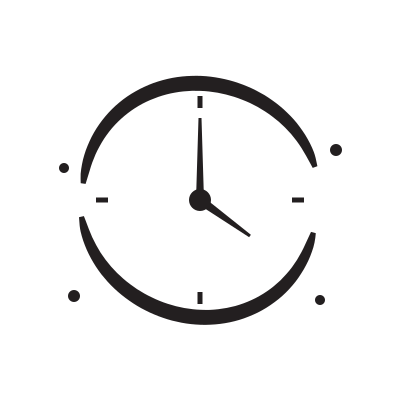

Planning a trip to Japan
Trips don’t fall apart at the attractions. They fall apart in the seams between them — the transfer, the check-in, the last train.

Last train, Tokyo
12:40am
A hard stop, not a suggestion. Missing it costs a ¥9,000 taxi or an unplanned capsule hotel.
Kyoto day trips
90min
Nara, Osaka, Himeji, Uji and Kobe all sit inside the hour and a half. One base, six ways.
The flip
Day 4
You stop reading every sign, and you have a konbini. That flip is the point of the trip.
Anchor days have one non-negotiable thing with a real time attached — a reservation, a dated pass, a Shinkansen booking. Everything else bends around it.
Drift days have no fixed point at all. Nothing is booked, so nothing can be late.
Fourteen anchor days isn’t a trip. It’s a logistics job you gave yourself on holiday.
Everything between the two breakpoints is elastic. The breakpoints themselves are not. Plan the seams and the pins take care of themselves.
Source: “Japan Doesn’t Reward Itineraries. It Rewards Buffers.”